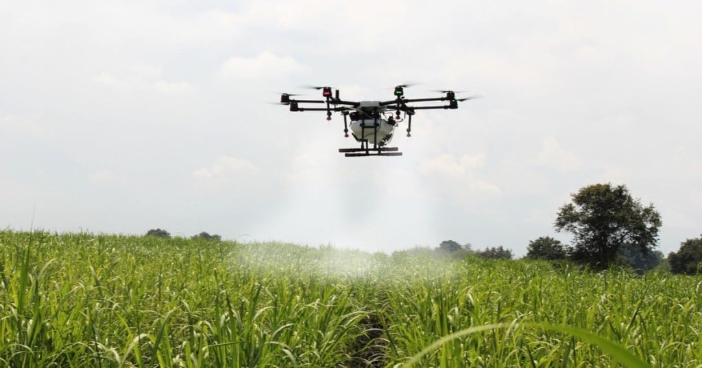

Tentang Pertanian
Petani telah menjadi salah satu pilar utama perekonomian dunia selama ribuan tahun.Petani juga merupakan fondasi dari kehidupan manusia.Petani juga berperan dalam menyediakan bahan baku untuk industri makanan,testil dan banyak sektor ekonomi lainnya.
Ini juga berdampak pada lingkungan kita,Pertanian berkelanjutan tidak hanya membantu menjaga produktivitas tanah tetapi juga mengurangi dampak negatif pada lingkungan.
Pertanian Modern
Dalam beberapa dekade terakhir,kolaborasi antara teknologi dan pertanian telah mengubah industri ini secara radikal.Teknologi telah membawa produktifitas dan inovasi ke dalam dunia pertanian modern,dan menghadirkan solusi untuk menghadapi populasi dunia yang terus bertumbuh.Pertanian modern tidak lagi hanya mengandalkan keberutungan dan pengalamanan,misalnya dengan adanya Sensor canggih dan Teknologi(loT) memungkinkan petani untuk memantau secara real-time kondisi tanah,tanaman,hewan,mengukur kelembaban tanah,pH tanah/nutrisi dan informasi tentang suhu.Data ini membantu petani membuat keputusan tentang kapan harus menanam dan menyiram/memberi makan.
Dengan kecangihan,robot dan peralatan otomatis kini telah menggantikan pekerjaan yang manual di pertanian modern.Dengan SIG mereka dapat memilih lokasi tanam yang optimal,mengelola irigasi,dan mengidentifikasi area dengan resiko erosi.t5
Referensi
Silakan kunjungi situs ppid.pertanian.go.id untuk informasi lebih lanjut tentang pertanian.